I grew up in a bit of an odd home. My parents are immigrants from Egypt, and although I ate a lot of Egyptian food growing up, my mother also liked to experiment with food from other cultures. I've been meaning to get her recipes down and organized in one place for a while, so here they are!
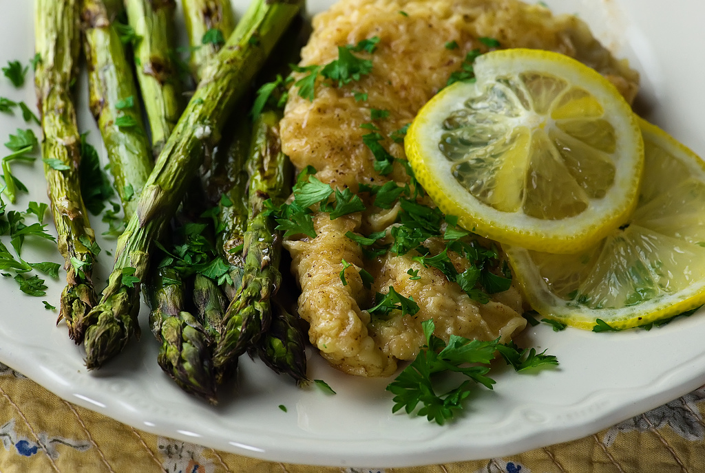
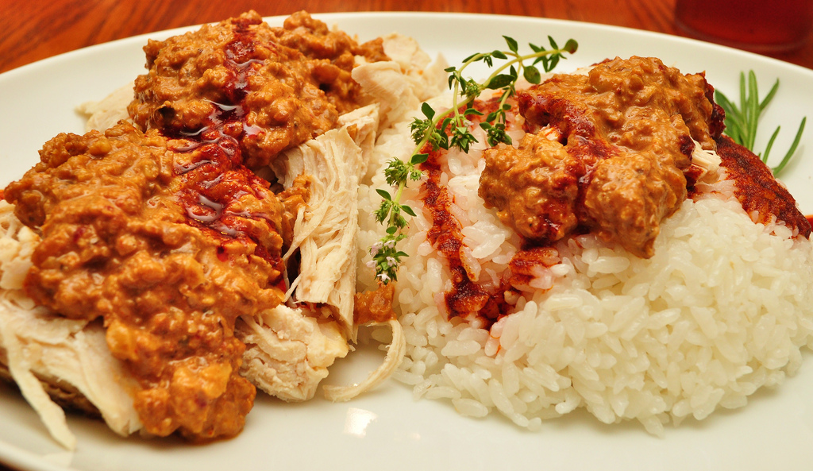
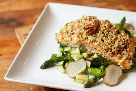
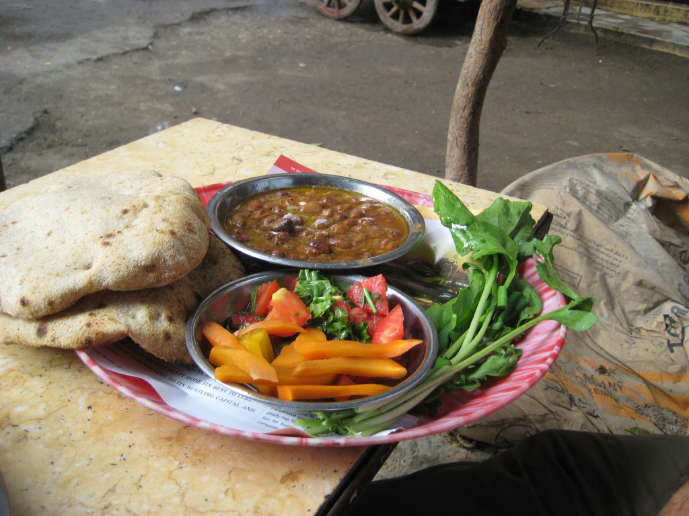
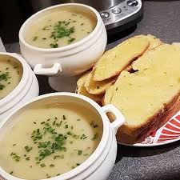
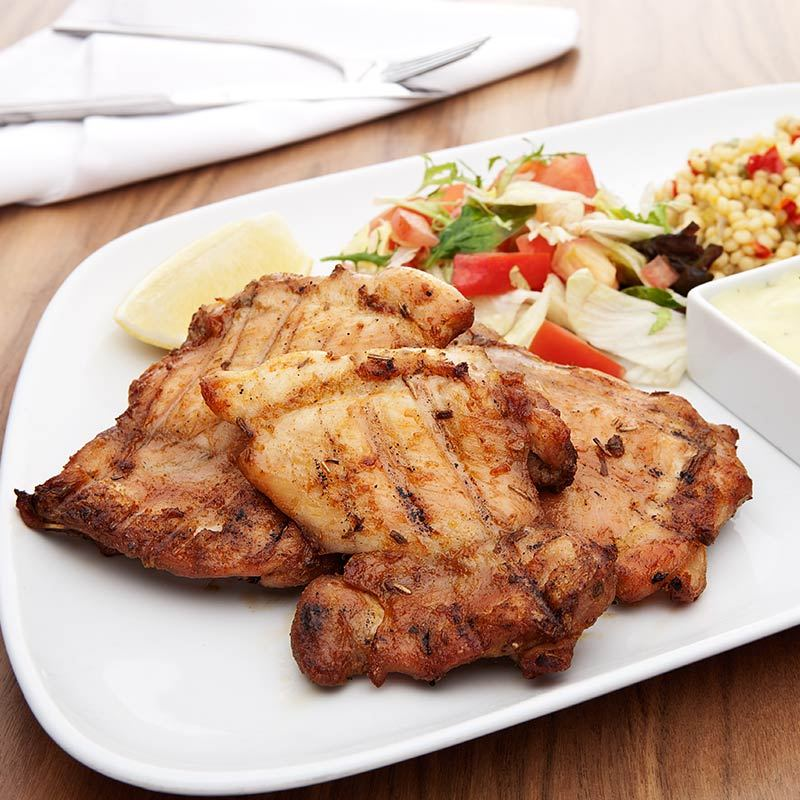
 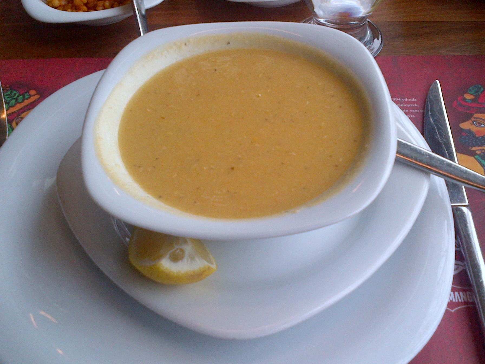
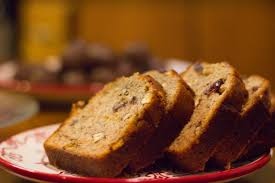
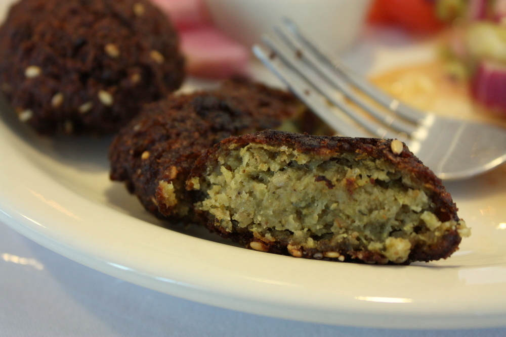
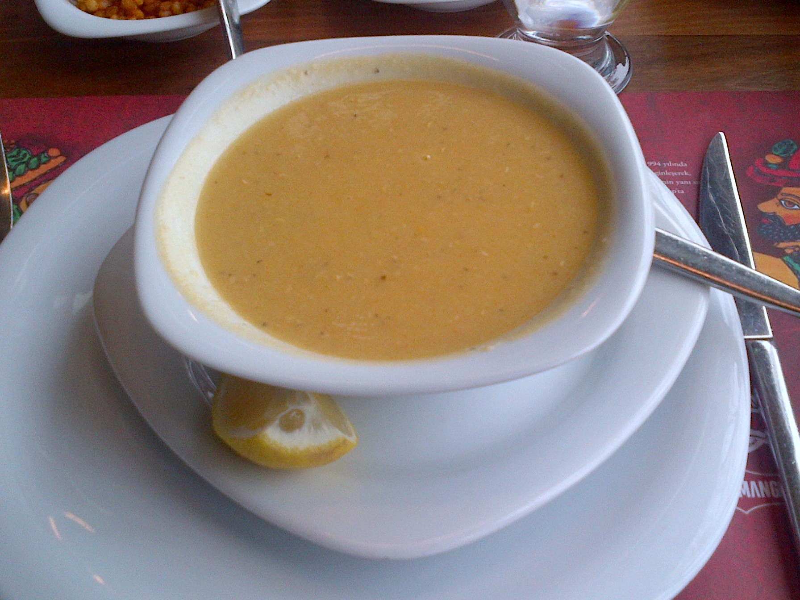
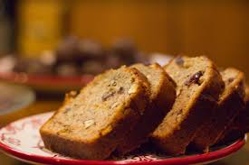
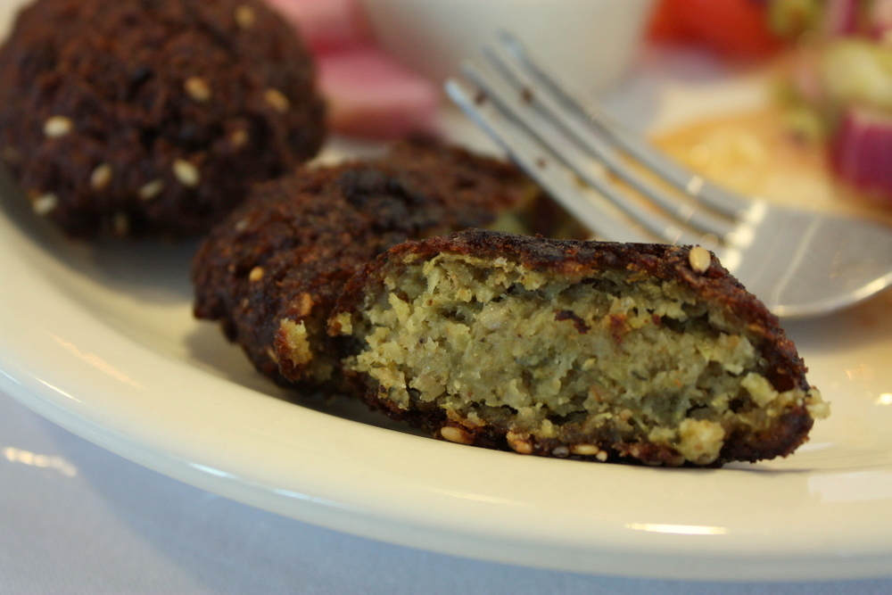